「因為大家一起旅行，才更有意義啊。」——《葬送的芙莉蓮》欣梅爾
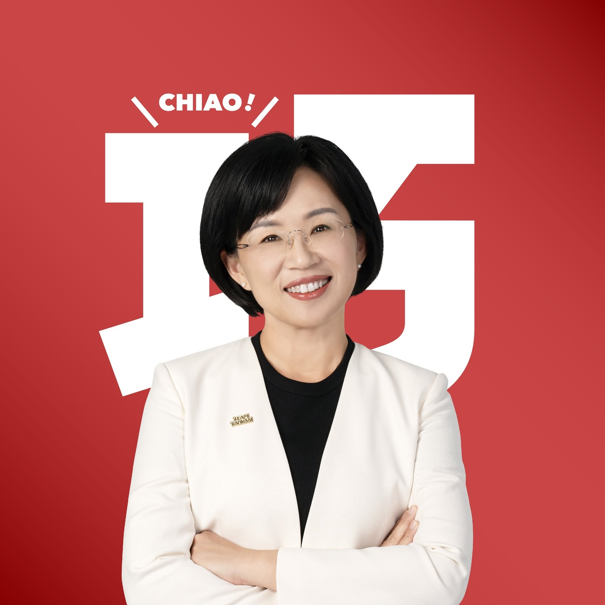
蘇巧慧
新北市長候選人
新北市長候選人
出席第 25 屆漫畫博覽會開幕記者會時引用勇者欣梅爾的這句話，表示努力的過程有人同行才更有價值，並說自己正在組建團隊、聚合人才，希望讓新北 29 區從衛星變成繁星。她也提出推動本土與跨國 IP 合作、發展 ACGN 延伸的體驗經濟等政見。
追星、網路迷因與 ACG（動畫、漫畫、遊戲）元素，在這屆選舉特別常見，從候選人的穿搭、造勢、社群發文到政見發表都看得到，相關畫面還在日本社群引發討論。有網友分析，解嚴後成長的世代經歷了社群網路、ACG 全球化與哈日熱潮，如今已是有投票權、也有參選權的公民，自然把熟悉的文化帶進選舉。
不過這類元素範圍很廣，有些難以界定，所以本專題只收兩類界線清楚的例子：候選人親口引用的動畫或漫畫台詞，以及候選人本人扮成的動畫或漫畫角色。作品不限日本，也包括美國動畫與漫威角色。
競選期間，至少有五位候選人在公開場合引用動畫或漫畫台詞，橫跨民進黨、國民黨與民眾黨。
他們借用角色的話，說的其實是自己對城市的想像。

出席第 25 屆漫畫博覽會開幕記者會時引用勇者欣梅爾的這句話，表示努力的過程有人同行才更有價值，並說自己正在組建團隊、聚合人才，希望讓新北 29 區從衛星變成繁星。她也提出推動本土與跨國 IP 合作、發展 ACGN 延伸的體驗經濟等政見。
在大安森林公園紙風車劇團的萬聖節演出擔任嘉賓，扮成琪琪並引用這句台詞。她說大家都喜歡台北、希望台北更好，鼓勵每個人關心城市、有勇氣提出改變，並把這種行動比喻為大家共同的「小小魔法」。
在「府中搞什麼鬼」萬聖節活動中扮成巴斯光年，與扮成胡迪的市長侯友宜一起喊出這句經典台詞。李四川說，巴斯光年與胡迪是至交好友、最佳拍檔，象徵兩人攜手延續新北市政。
在競選總部舉辦萬聖節討糖活動，用這句話形容選戰的最後衝刺。他說《聖鬥士星矢》是許多家長共同的童年回憶，並把作品中守護夥伴、永不放棄的精神，連結到竹北這座年輕有活力的城市。
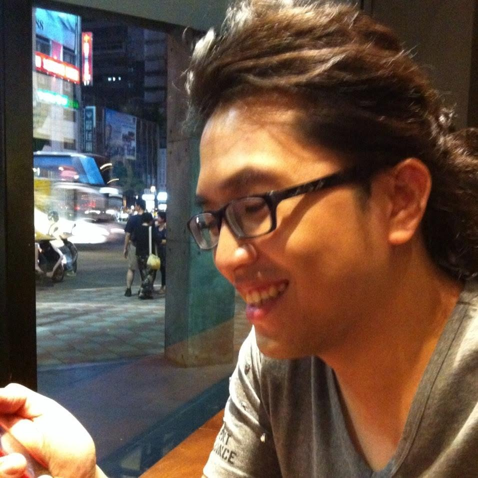
在台北市長首場公辦政見發表會的結語引用初代火影千手柱間的這段話。引用前，他提到許多前輩不想改變，表示理解與尊重，但希望對方踏出一小步；引用後，他說當市長不是為了權力或地位，而是因為台北是他出生、成長、成為爸爸的城市。
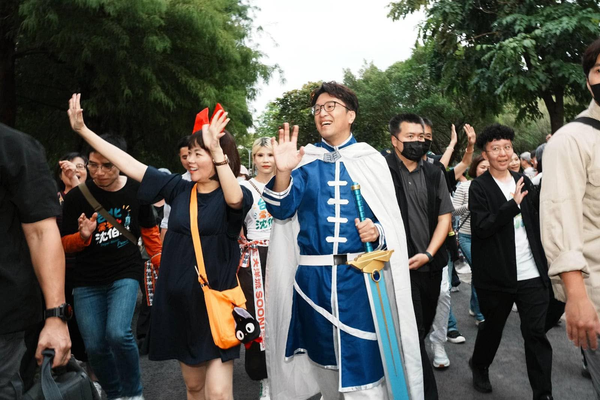
《葬送的芙莉蓮》的勇者欣梅爾，
是競選期間最常出現的角色：
蘇巧慧引用他的話，
沈伯洋與莊競程在萬聖節扮成他。
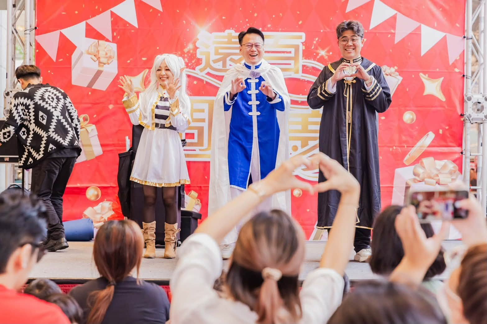
競選期間，至少九位候選人扮成動畫或漫畫角色，橫跨三個政黨。
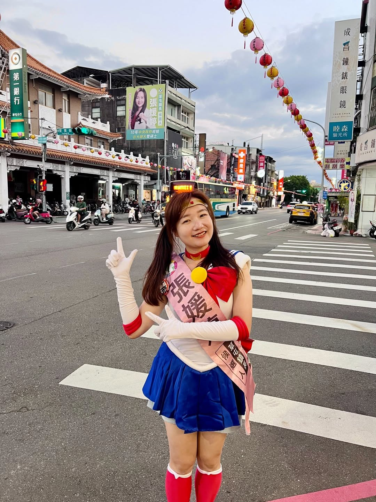
與南投縣長候選人温世政車掃時，以一身「美少女戰士」造型亮相。她說因為車掃完要趕場萬聖節活動，才提前換裝，沒想到意外掀起話題。
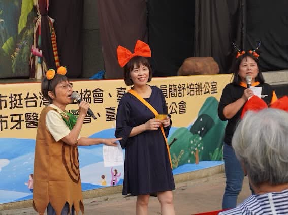
在大安森林公園紙風車劇團演出擔任嘉賓，穿上琪琪的黑色小洋裝、手拿飛天掃帚。她說琪琪曾失去勇氣飛不起來，後來為了救朋友重新找回魔法。
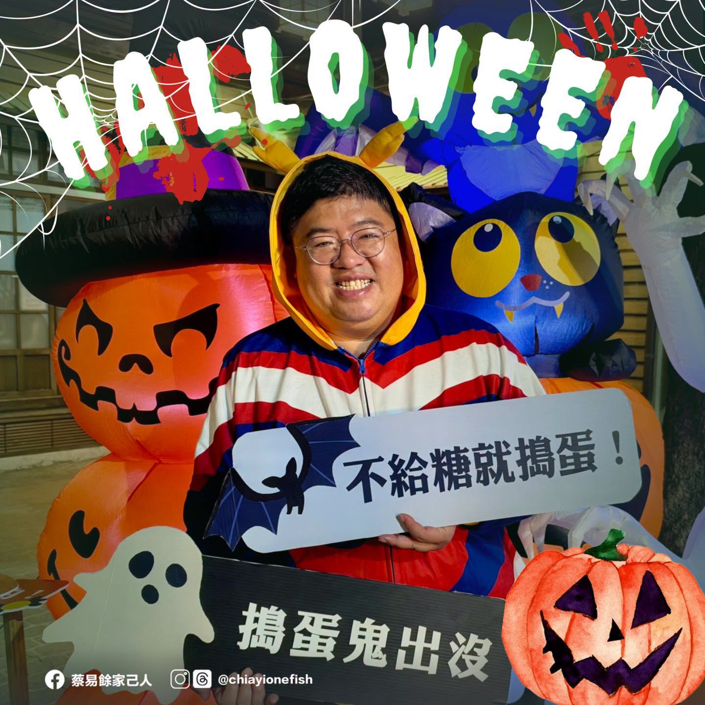
化身「和平象徵」歐爾麥特參加朴子市萬聖節千人踩街。他說歐爾麥特承接歷代「One For All」的力量，就像嘉義縣歷任縣長一棒接一棒，自己已準備好接下一棒。
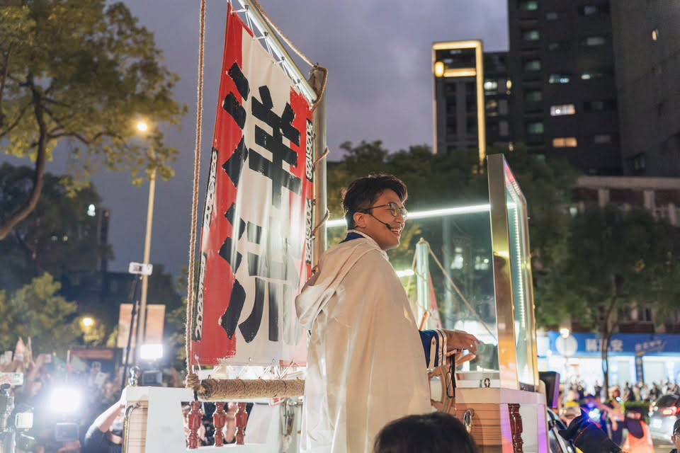
兩天內三度扮成勇者欣梅爾：大安森林公園紙風車演出、「台北大洋流」車隊掃街，以及松山信義聯合競總成立大會。車掃時有小朋友揮光劍應援，他拿起道具劍笑說「我也有劍」。
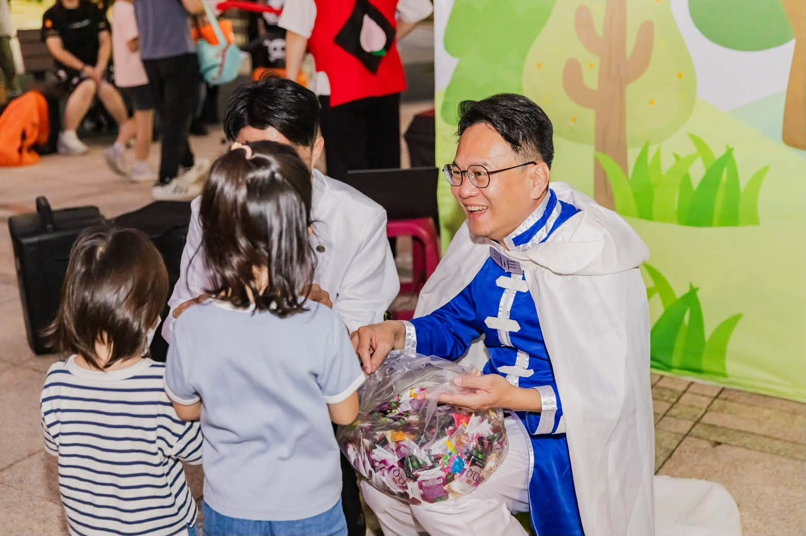
在競選總部萬聖節活動同樣扮成欣梅爾，取諧音「新Mayor」。報導指出，他與沈伯洋都是學者出身、都挑戰現任市長，號次都抽到 3 號。
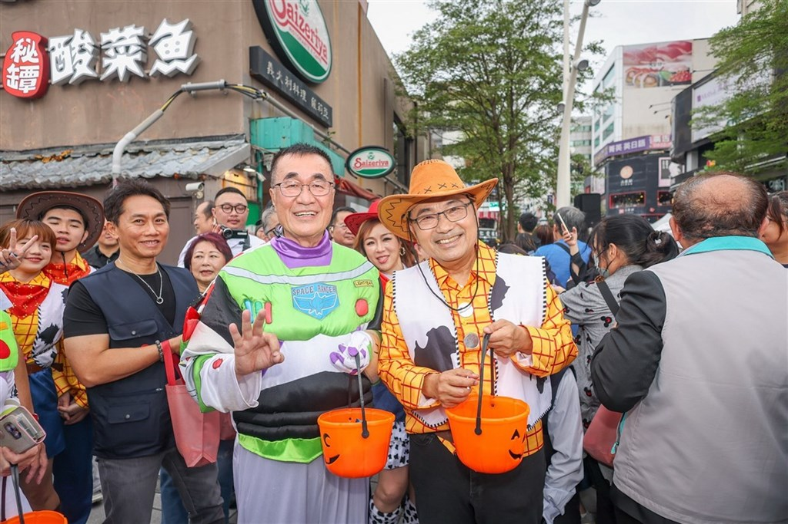
在「府中搞什麼鬼」萬聖節活動扮成巴斯光年，與扮成胡迪的市長侯友宜一起喊出「飛向宇宙、浩瀚無垠」，並沿街分送糖果。
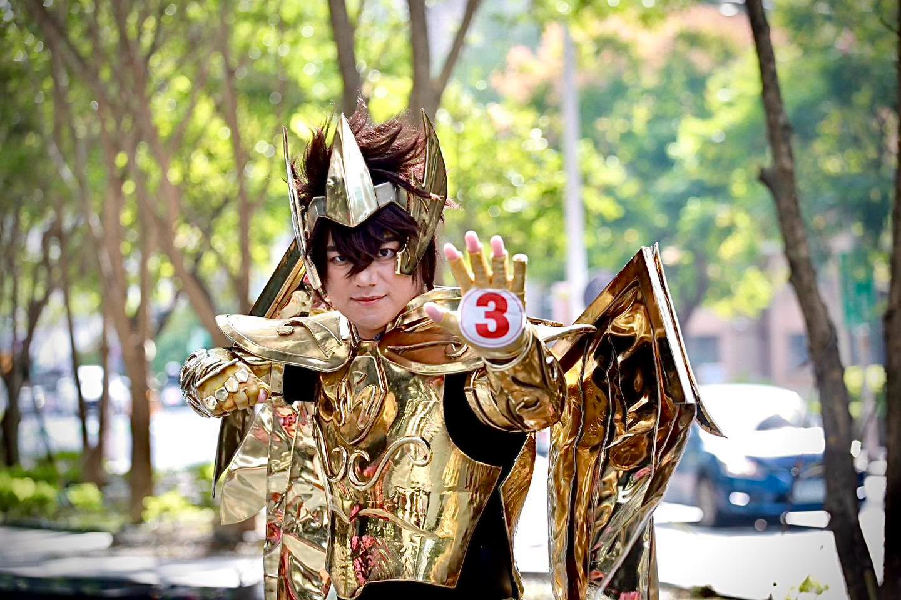
在競選總部萬聖節討糖活動穿上星矢服裝，與大小朋友互動、發送糖果，並喊出選戰最後衝刺要「燃燒小宇宙」。
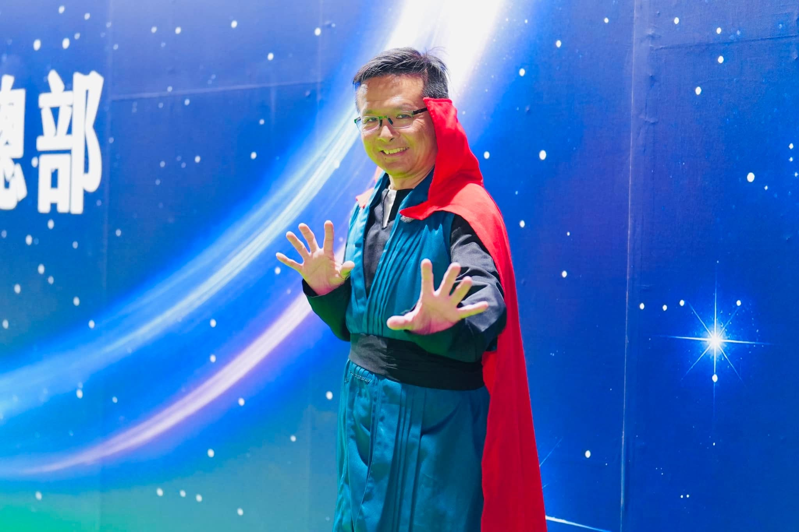
競選總部舉辦萬聖節南瓜燈彩繪，他化身奇異博士和大小朋友欣賞作品、合影，並同場提出「全齡教育支持網」政見。
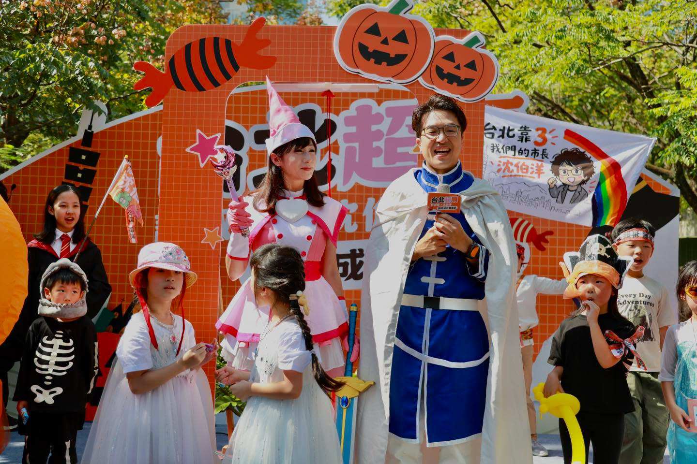
在松德公園舉辦松山信義聯合競總成立大會，結合萬聖節派對，以小魔女DoReMi造型亮相，同場沈伯洋扮成勇者欣梅爾。與南投縣長候選人許淑華同名，是不同人。
本屆選舉中，候選人引用台詞或扮演的動漫角色共 9 位，其中 7 位來自日本作品、2 位來自美國作品。
本專題收錄 14 人次：5 則候選人親口引用的台詞，9 人親自扮成動畫與漫畫角色（同一人既引用台詞又扮裝，兩類各算一次，實際涉及 10 位候選人）。按政黨計，民進黨 9 人次、國民黨 3 人次、民眾黨 2 人次，三個政黨都有人使用。
萬聖節是最大舞台。9 位扮裝的候選人，全部集中在 10 月 26 日至 11 月 1 日之間；5 則台詞裡，也有 3 則出現在 10 月 31 日當天。
日本作品佔多數。14 人次中，11 人次來自日本作品，3 人次來自美國作品（巴斯光年、奇異博士）。《葬送的芙莉蓮》的欣梅爾出現最多，共 3 次。
台詞多談「同伴」。蘇巧慧談「一起旅行」，李四川談「最佳拍檔」，邱臣遠談「守護夥伴」，沈伯洋談「一起守護家園」，借角色說的都是團隊與守護。
動漫梗讓選舉多了一點親切感，但 11 月 28 日投票時，決定票投給誰的，終究還是政見與執行力。